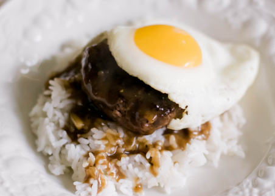

Loco Moco Recipe
Serves 4 people. Update serving size below if needed:
Ingredients:
- 1 lb ground beef chuck
- 1 cup sliced onion
- 1 cup sliced mushrooms
- 12oz jar of brown gravy
- 1/2 cup water
- 4 eggs
- 4 cups cooked rice
Instructions:
- Heat large skillet with cooking spray over medium heat
- Divide ground beef into 4 equal portions and form into patties
- Fry patties in skillet approximately 6 minutes per side. Center should read at 140 degrees F
- Remove patties while leaving oil and patty drippings in skillet
- Reduce skillet heat to low and stir in onion and water into skillet until onions slightly
softened
- Stir in mushrooms and cook for approximately 5 minutes more
- Pour gravy over mixture in skillet until gravy is hot
- Lay patties in gravy until reheated trhough
- While patties simmer in gravy, fry eggs in separate skillet until white is opaque but the yolk
remains runny
- Divide rice between 4 plates and top each rice portion with a patty, egg, and gravy
- Serve and eat!
